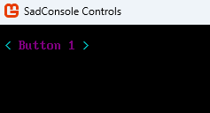
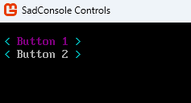

Change the colors used by controls
Controls get their colors from a variety of places, but in order. First, the control itself is checked for colors. If control doesn't define any colors, the control's host is checked, and if those aren't defined, the default colors are used. For more information, see Controls overview (SadConsole Systems).
The following sections demonstrate how to change a control's colors.
UI related types are in these two namespaces:
SadConsole.UI- Basic supporting objects, such as the controls host, colors, and window types.SadConsole.UI.Controls- All of the controls provided by SadConsole.
How to edit the default colors
All controls, unless overridden, get their colors from the SadConsole.UI.Colors.Default property. You can set that property to a new Colors instance, or change the individual properties on the existing instance.
After changing the Colors.Default.Control* color properties, you must call RebuildAppearances() to rebuild the specific Colors.Default.Appearance_* appearance states.
Colors.Default.ControlForegroundNormal.SetColor(Color.Purple);
Colors.Default.RebuildAppearances();
How to set the colors for a host
If the colors are set on the control host, all controls in the host use these colors instead of the default colors. The colors are set by setting the ControlHost.ThemeColors property to an instance of the Colors type. To clear those colors and use the default, set ThemeColors to null.
// Create the new colors
Colors newColors = Colors.Default.Clone();
newColors.Red = Color.Red.GetBrightest();
newColors.ControlForegroundNormal.SetColor(Color.Purple);
newColors.RebuildAppearances();
// Create the controls console, which has a controls host
ControlsConsole console = new(GameHost.Instance.ScreenCellsX, GameHost.Instance.ScreenCellsY);
// Update the controls host
console.Controls.ThemeColors = newColors;
// Add a single control
Button button1 = new("Button 1");
button1.Position = new Point(1, 1);
console.Controls.Add(button1);
// Show the console
GameHost.Instance.Screen = console;

How to set the colors for a control
If colors are set directly on a control, that control uses those colors instead of any other set of colors. Call the SetThemeColors(Colors?) on the control, passing in the colors you want to use. Pass null to remove the colors if they were previously set on the control.
// Create the new colors
Colors newColors = Colors.Default.Clone();
newColors.Red = Color.Red.GetBrightest();
newColors.ControlForegroundNormal.SetColor(Color.Purple);
newColors.RebuildAppearances();
// Create the controls console, which has a controls host
ControlsConsole console = new(GameHost.Instance.ScreenCellsX, GameHost.Instance.ScreenCellsY);
// Add first button with custom colors
Button button1 = new("Button 1");
button1.SetThemeColors(newColors);
button1.Position = new Point(1, 1);
console.Controls.Add(button1);
// Add second button without custom colors
Button button2 = new("Button 2");
button2.Position = new Point(1, 2);
console.Controls.Add(button2);
// Show the console
GameHost.Instance.Screen = console;

How to reset the colors to the default
If you ever change the SadConsole.UI.Colors.Default colors and want to revert them back to their defaultes, set the property to the return value of the CreateAnsi() method. This method is used to generate the colors used by SadConsole when it starts.
Colors.Default = Colors.CreateAnsi();
Tip
SadConsole also defines a set colors based on a blue tone, which you can use instead of the CreateAnsi colors which are based on black.
Colors.Default = Colors.CreateSadConsoleBlue();
How to get the colors used by a control or host
There are times when you want to find the colors used by a control or a host, so that you can match that set of colors. This is most common when you've created your own control and you want to know what colors to use. Another common scenario for knowing the colors of a control is when you want to draw something that matches those colors. For example, the Colors type defines a Lines color, which is used to color various parts of controls, such as the RadioButton's brackets or the ListBox's surrounding box. You may want to know this color when drawing other lines on the surface host, so the color matches the controls.
Call the control's FindThemeColors() method. This searches the control and then the host for colors. If no colors are found, the default colors are returned.
Colors assignedColors = someControl.FindThemeColors();
Likewise, you can get the colors of a control host with the GetThemeColors() method. This method checks to see if the host has colors value assigned to the ThemeColors property and returns them. If the property is null, the default colors are returned.
// Using a ControlsConsole which provides a ControlHost
Colors hostColors = console.Controls.GetThemeColors();